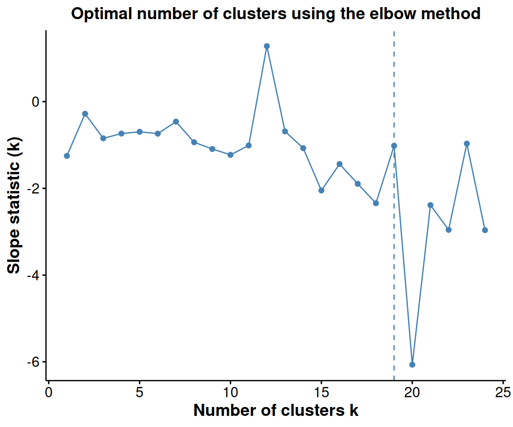
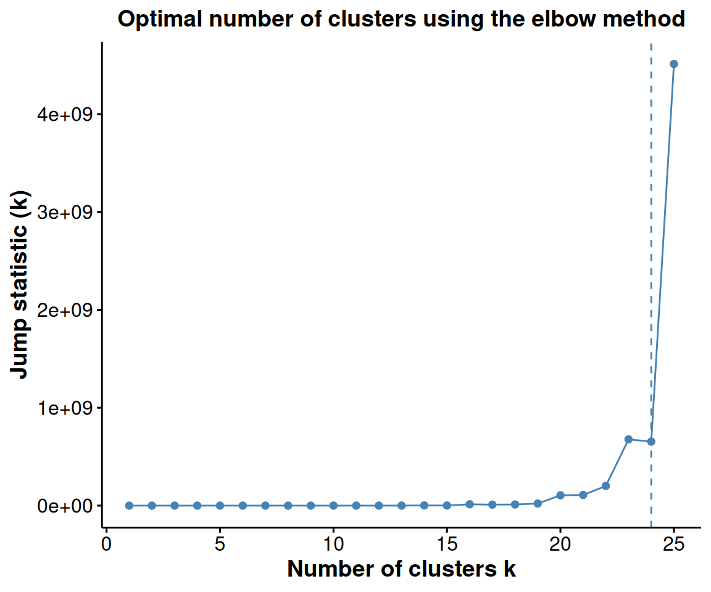
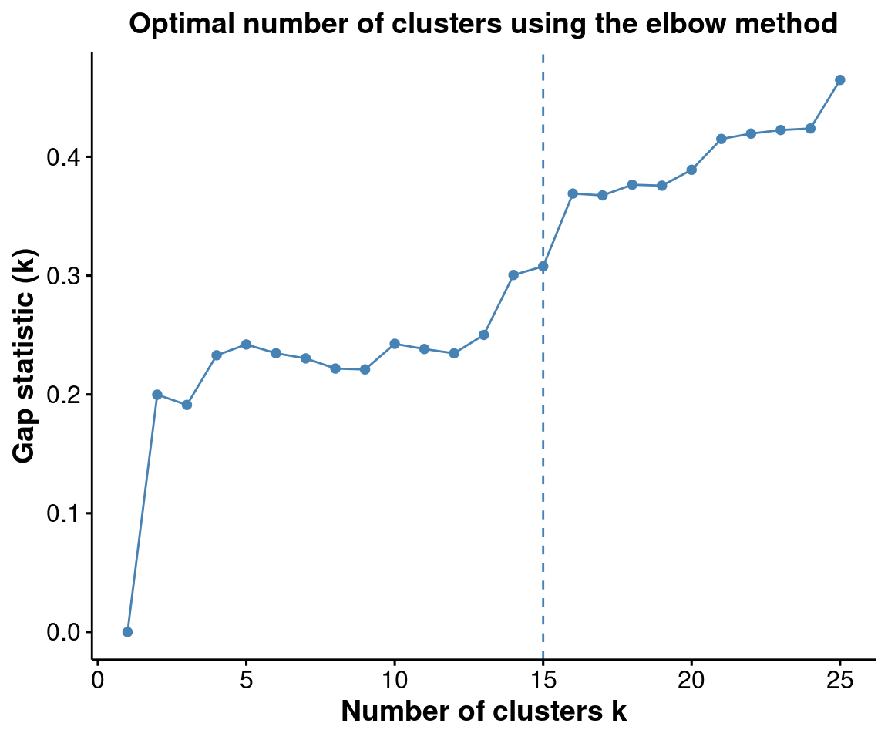
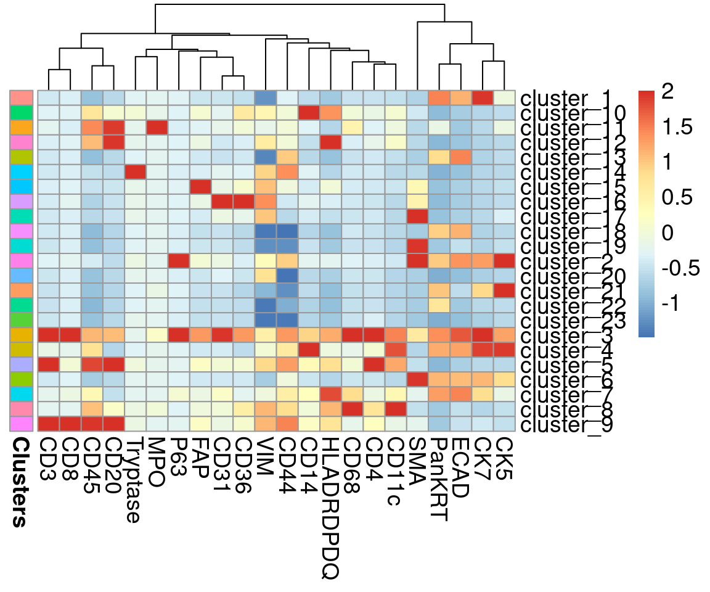
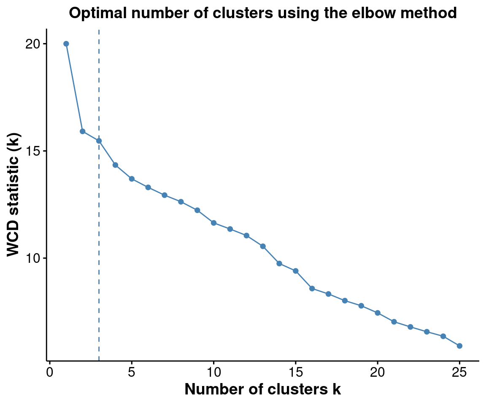
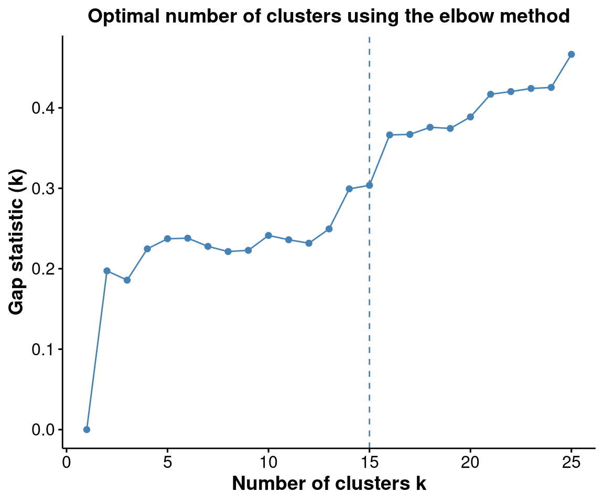
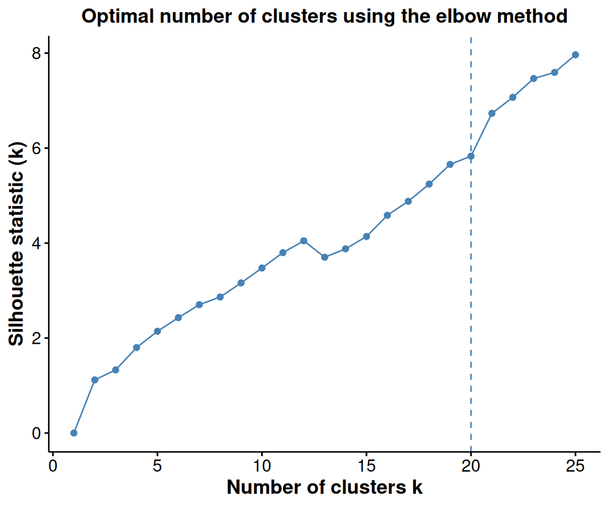

Installation
if (!require("BiocManager"))
install.packages("BiocManager")
BiocManager::install("FuseSOM")Introduction
A correlation based multiview self organizing map for the
characterization of cell types (FuseSOM) is a tool for
unsupervised clustering. FuseSOM is robust and achieves
high accuracy by combining a Self Organizing Map
architecture and a Multiview integration of correlation
based metrics to cluster highly multiplexed in situ imaging cytometry
assays. The FuseSOM pipeline has been streamlined and
accepts currently used data structures including
SingleCellExperiment and SpatialExperiment
objects as well as DataFrames.
Disclaimer
This is purely a tool generated for clustering and as such it does
not provide any means for QC and feature selection. It is advisable that
the user first use other tools for quality control and feature selection
before running FuseSOM.
Getting Started
FuseSOM Matrix Input
If you have a matrix containing expression data that was QCed and
normalised by some other tool, the next step is to run the
FuseSOM algorithm.This can be done by calling the
runFuseSOM() function which takes in the matrix of interest
where the columns are markers and the rows are observations, the makers
of interest (if this is not provided, it is assumed that all columns are
markers), and the number of clusters.
# load FuseSOM
library(FuseSOM)Next we will load in the Risom et al
dataset and run it through the FuseSOM pipeline. This dataset profiles
the spatial landscape of ductal carcinoma in situ (DCIS), which is a
pre-invasive lesion that is thought to be a precursor to invasive breast
cancer (IBC). The key conclusion of this manuscript (amongst others) is
that spatial information about cells can be used to predict disease
progression in patients.We will also be using the markers used in the
original study.
# load in the data
data("risom_dat")
# define the markers of interest
risomMarkers <- c('CD45','SMA','CK7','CK5','VIM','CD31','PanKRT','ECAD',
'Tryptase','MPO','CD20','CD3','CD8','CD4','CD14','CD68','FAP',
'CD36','CD11c','HLADRDPDQ','P63','CD44')
# we will be using the manual_gating_phenotype as the true cell type to gauge
# performance
names(risom_dat)[names(risom_dat) == 'manual_gating_phenotype'] <- 'CellType'Now that we have loaded the data and define the markers of interest.
We can run the FuseSOM algorithm. We have provided a
function runFuseSOM that runs the pipeline from top to
bottom and returns the cluster labels as well as the
Self Organizing Map model.
risomRes <- runFuseSOM(data = risom_dat, markers = risomMarkers,
numClusters = 23)## You have provided a dataset of class data.frame## Everything looks good. Now running the FuseSOM algorithm## Now Generating the Self Organizing Map Grid## Optimal Grid Size is: 8## Now Running the Self Organizing Map Model## Now Clustering the Prototypes## Loading required namespace: fastcluster## Now Mapping Clusters to the Original Data## The Prototypes have been Clustered and Mapped Successfully## The FuseSOM algorithm has completed successfullyLets look at the distribution of the clusters.
##
## cluster_1 cluster_10 cluster_11 cluster_12 cluster_13 cluster_14
## 0.323602021 0.035968538 0.005439775 0.021443334 0.061100586 0.026596050
## cluster_15 cluster_16 cluster_17 cluster_18 cluster_19 cluster_2
## 0.020582156 0.032624297 0.024931106 0.076128143 0.015802618 0.014927087
## cluster_20 cluster_21 cluster_22 cluster_23 cluster_3 cluster_4
## 0.049962682 0.009185900 0.051771156 0.066913538 0.004923068 0.014108968
## cluster_5 cluster_6 cluster_7 cluster_8 cluster_9
## 0.040776783 0.064444827 0.020854863 0.010032725 0.007879780Looks like cluster_1 has about \(32\%\) of the cells which is interesting.
Next, lets generate a heatmap of the marker expression for each
cluster.
risomHeat <- FuseSOM::markerHeatmap(data = risom_dat, markers = risomMarkers,
clusters = risomRes$clusters, clusterMarkers = TRUE)
Using FuseSOM to estimate the number of clusters
FuseSOM also provides functionality for estimating the
number of clusters in a dataset using three classes of methods
including:
- Discriminant based method.
- A method developed in house based on discriminant based maximum clusterability projection pursuit
- Distance based methods which includes:
- The Gap Statistic
- The Jump Statistic
- The Slope Statistic
- The Within Cluster Dissimilarity Statistic
- The Silhouette Statistic
We can estimate the number of clusters using the
estimateNumCluster. Run
help(estimateNumCluster) to see it’s complete
functionality.
# lets estimate the number of clusters using all the methods
# original clustering has 23 clusters so we will set kseq from 2:25
# we pass it the som model generated in the previous step
risomKest <- estimateNumCluster(data = risomRes$model, kSeq = 2:25,
method = c("Discriminant", "Distance"))## Now Computing the Number of Clusters using Discriminant Analysis## Now Computing The Number Of Clusters Using Distance AnalysisWe can then use this result to determine the best number of clusters
for this dataset based on the different metrics. The
FuseSOM package provides a plotting function
(optiPlot) which generates an elbow plot with the optimal
value for the number of clusters for the distance based methods. See
below
# what is the best number of clusters determined by the discriminant method?
# optimal number of clusters according to the discriminant method is 7
risomKest$Discriminant ## [1] 7
# we can plot the results using the optiplot function
pSlope <- optiPlot(risomKest, method = 'slope')
pSlope
pJump <- optiPlot(risomKest, method = 'jump')
pJump
pWcd <- optiPlot(risomKest, method = 'wcd')
pWcd
pGap <- optiPlot(risomKest, method = 'gap')
pGap
pSil <- optiPlot(risomKest, method = 'silhouette')
pSil
From the plots, we see that the Jump statistics almost
perfectly capture the number of clusters. The Gap method is
a close second with \(15\) clusters.
All the other methods significantly underestimates the number of
clusters.
FuseSOM Sinlge Cell Epxeriment object as input.
The FuseSOM algorithm is also equipped to take in a
SingleCellExperiment object as input. The results of the
pipeline will be written to either the metada or the colData fields. See
below.
First we create a SingleCellExperiment object
library(SingleCellExperiment)
# create a singelcellexperiment object
colDat <- risom_dat[, setdiff(colnames(risom_dat), risomMarkers)]
sce <- SingleCellExperiment(assays = list(counts = t(risom_dat)),
colData = colDat)
sce## class: SingleCellExperiment
## dim: 23 69672
## metadata(0):
## assays(1): counts
## rownames(23): CD45 SMA ... CD44 CellType
## rowData names(0):
## colnames: NULL
## colData names(1): X
## reducedDimNames(0):
## mainExpName: NULL
## altExpNames(0):Next we pass it to the runFuseSOM() function. Here, we
can provide the assay in which the data is stored and what name to store
the clusters under in the colData section. Note that the
Self Organizing Map that is generated will be stored in the
metadata field.
risomRessce <- runFuseSOM(sce, markers = risomMarkers, assay = 'counts',
numClusters = 23, verbose = FALSE)## You have provided a dataset of class SingleCellExperiment## Everything looks good. Now running the FuseSOM algorithm## Now Generating the Self Organizing Map Grid## Optimal Grid Size is: 8## Now Running the Self Organizing Map Model## Now Clustering the Prototypes## Now Mapping Clusters to the Original Data## The Prototypes have been Clustered and Mapped Successfully## The FuseSOM algorithm has completed successfully## [1] "X" "clusters"
names(metadata(risomRessce))## [1] "SOM"Notice how the there is now a clusters column in the colData and SOM field in the metadata. You can run this function again with a new set of cluster number. If you provide a new name for the clusters, it will be stored under that new column, else, it will overwrite the current clusters column. Running it again on the same object will overwrite the SOM field in the metadata.
Just like before, lets plot the heatmap of the resulting clusters across all markers.
data <- risom_dat[, risomMarkers] # get the original data used
clusters <- colData(risomRessce)$clusters # extract the clusters from the sce object
# generate the heatmap
risomHeatsce <- markerHeatmap(data = risom_dat, markers = risomMarkers,
clusters = clusters, clusterMarkers = TRUE)
Using FuseSOM to estimate the number of clusters for
single cell experiment objects
Just like before, we can estimate the number of clusters
# lets estimate the number of clusters using all the methods
# original clustering has 23 clusters so we will set kseq from 2:25
# now we pass it a singlecellexperiment object instead of the som model as before
# this will return a singelcellexperiment object where the metatdata contains the
# cluster estimation information
risomRessce <- estimateNumCluster(data = risomRessce, kSeq = 2:25,
method = c("Discriminant", "Distance"))## You have provided a dataset of class: SingleCellExperiment## Now Computing the Number of Clusters using Discriminant Analysis## Now Computing The Number Of Clusters Using Distance Analysis
names(metadata(risomRessce))## [1] "SOM" "clusterEstimation"Notice how the metadata now contains a clusterEstimation
field which holds the results from the estimateNumCluster()
function
We can assess the results in a similar fashion as before
# what is the best number of clusters determined by the discriminant method?
# optimal number of clusters according to the discriminant method is 8
metadata(risomRessce)$clusterEstimation$Discriminant ## [1] 8
# we can plot the results using the optiplot function
pSlope <- optiPlot(risomRessce, method = 'slope')## You have provided a dataset of class: SingleCellExperiment
pSlope
pJump <- optiPlot(risomRessce, method = 'jump')## You have provided a dataset of class: SingleCellExperiment
pJump
pWcd <- optiPlot(risomRessce, method = 'wcd')## You have provided a dataset of class: SingleCellExperiment
pWcd
pGap <- optiPlot(risomRessce, method = 'gap')## You have provided a dataset of class: SingleCellExperiment
pGap
pSil <- optiPlot(risomRessce, method = 'silhouette')## You have provided a dataset of class: SingleCellExperiment
pSil
Again, we see that the Jump statistics almost perfectly
capture the number of clusters. The Gap method is a close
second with \(15\) clusters. All the
other methods significantly underestimates the number of clusters.
sessionInfo()
## R version 4.2.2 (2022-10-31)
## Platform: x86_64-pc-linux-gnu (64-bit)
## Running under: EndeavourOS
##
## Matrix products: default
## BLAS: /usr/lib/libblas.so.3.10.1
## LAPACK: /usr/lib/liblapack.so.3.10.1
##
## locale:
## [1] LC_CTYPE=en_AU.UTF-8 LC_NUMERIC=C
## [3] LC_TIME=en_AU.UTF-8 LC_COLLATE=en_AU.UTF-8
## [5] LC_MONETARY=en_AU.UTF-8 LC_MESSAGES=en_AU.UTF-8
## [7] LC_PAPER=en_AU.UTF-8 LC_NAME=C
## [9] LC_ADDRESS=C LC_TELEPHONE=C
## [11] LC_MEASUREMENT=en_AU.UTF-8 LC_IDENTIFICATION=C
##
## attached base packages:
## [1] stats4 stats graphics grDevices utils datasets methods
## [8] base
##
## other attached packages:
## [1] SingleCellExperiment_1.20.0 SummarizedExperiment_1.28.0
## [3] Biobase_2.58.0 GenomicRanges_1.50.1
## [5] GenomeInfoDb_1.34.2 IRanges_2.32.0
## [7] S4Vectors_0.36.0 BiocGenerics_0.44.0
## [9] MatrixGenerics_1.10.0 matrixStats_0.62.0
## [11] FuseSOM_1.1.1 knitr_1.40
## [13] BiocStyle_2.26.0
##
## loaded via a namespace (and not attached):
## [1] colorspace_2.0-3 ggsignif_0.6.4 class_7.3-20
## [4] modeltools_0.2-23 mclust_6.0.0 rprojroot_2.0.3
## [7] XVector_0.38.0 fs_1.5.2 proxy_0.4-27
## [10] ggpubr_0.4.0 farver_2.1.1 flexmix_2.3-18
## [13] fansi_1.0.3 splines_4.2.2 mnormt_2.1.1
## [16] robustbase_0.95-0 cachem_1.0.6 brglm_0.7.2
## [19] jsonlite_1.8.3 broom_1.0.1 kernlab_0.9-31
## [22] cluster_2.1.4 pheatmap_1.0.12 BiocManager_1.30.19
## [25] compiler_4.2.2 backports_1.4.1 assertthat_0.2.1
## [28] Matrix_1.5-1 fastmap_1.1.0 profileModel_0.6.1
## [31] cli_3.4.1 htmltools_0.5.3 tools_4.2.2
## [34] gtable_0.3.1 glue_1.6.2 GenomeInfoDbData_1.2.9
## [37] dplyr_1.0.10 FCPS_1.3.1 DataVisualizations_1.2.3
## [40] Rcpp_1.0.9 carData_3.0-5 jquerylib_0.1.4
## [43] pkgdown_2.0.6 vctrs_0.5.0 nlme_3.1-160
## [46] fpc_2.2-9 psych_2.2.9 xfun_0.34
## [49] fastcluster_1.2.3 stringr_1.4.1 lifecycle_1.0.3
## [52] rstatix_0.7.0 princurve_2.1.6 DEoptimR_1.0-11
## [55] zlibbioc_1.44.0 MASS_7.3-58.1 scales_1.2.1
## [58] ragg_1.2.4 parallel_4.2.2 RColorBrewer_1.1-3
## [61] yaml_2.3.6 memoise_2.0.1 ggplot2_3.4.0
## [64] yulab.utils_0.0.5 sass_0.4.2 stringi_1.7.8
## [67] highr_0.9 desc_1.4.2 permute_0.9-7
## [70] rlang_1.0.6 pkgconfig_2.0.3 systemfonts_1.0.4
## [73] prabclus_2.3-2 bitops_1.0-7 evaluate_0.18
## [76] lattice_0.20-45 purrr_0.3.5 labeling_0.4.2
## [79] tidyselect_1.2.0 magrittr_2.0.3 bookdown_0.29
## [82] R6_2.5.1 generics_0.1.3 DelayedArray_0.24.0
## [85] DBI_1.1.3 withr_2.5.0 pillar_1.8.1
## [88] mgcv_1.8-41 abind_1.4-5 RCurl_1.98-1.9
## [91] sp_1.5-1 nnet_7.3-18 tibble_3.1.8
## [94] analogue_0.17-6 car_3.1-1 utf8_1.2.2
## [97] rmarkdown_2.17 grid_4.2.2 vegan_2.6-4
## [100] diptest_0.76-0 digest_0.6.30 tidyr_1.2.1
## [103] gridGraphics_0.5-1 textshaping_0.3.6 coop_0.6-3
## [106] munsell_0.5.0 ggplotify_0.1.0 bslib_0.4.1